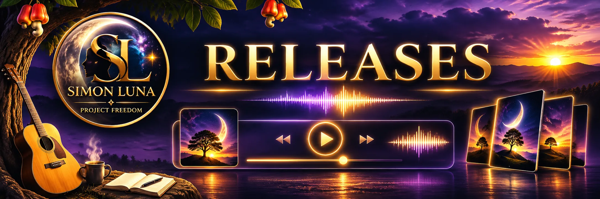
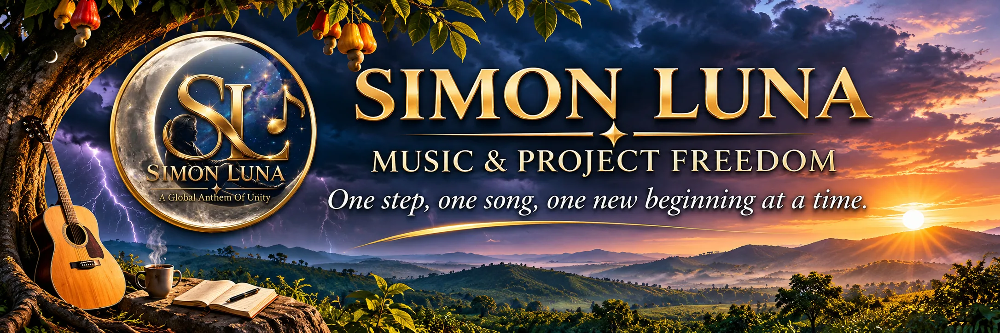
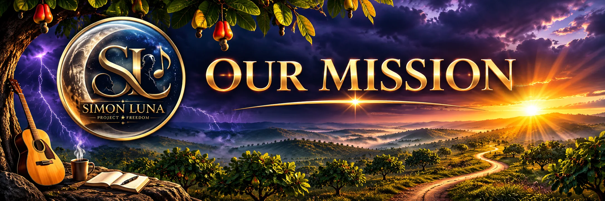
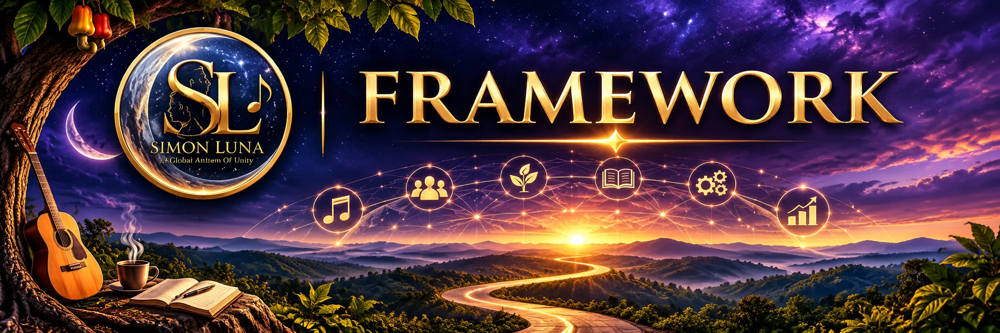
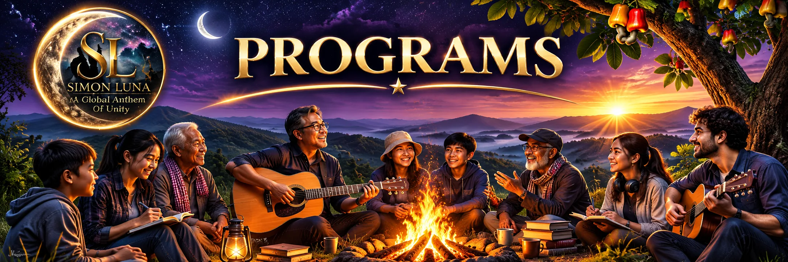
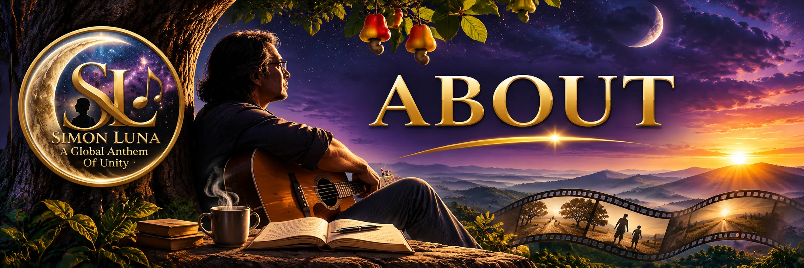

Our Vision
A future where people facing hardship have hope, dignity and opportunities to begin again.

12 songs. One true story. A journey from loss toward hope. Discover the debut album Beneath the Storm.
Listen Now
Selected: 01. I Lost Everything

Beyond the music
One step, one song, one new beginning at a time.
Project Freedom is an independent creative initiative linking music, learning, economic independence and social impact. Our music is active; the wider programs described below are proposed or in preparation.
A future where people facing hardship have hope, dignity and opportunities to begin again.
Use music and real-life storytelling to encourage resilience, share learning and explore practical pathways toward economic independence and positive social impact.
Connect with listeners through meaningful music; share experiences across generations; test practical community initiatives; and learn from results before expanding.

Our development direction
The 2027–2036 horizon is a planning framework, not a promise that every proposed program will launch. Activities, budgets and indicators will be refined through approved annual plans.
Organize creative outputs, document lessons, and test feasible activities within available resources.
Review participation, creative reach, implementation costs and practical outcomes before expanding.
Explore partnerships and scale only initiatives that demonstrate value, sustainability and community benefit.
Music, videos, stories and learning materials produced and shared.
Audience engagement, feedback and participation, interpreted carefully rather than as impact alone.
Documented lessons and evidence of benefit from future pilot activities, where feasible.

Ideas for the future
These concepts are under development. They are not yet open services, grant programs or requests for donations.
Explore practical farm learning, sustainable livelihoods and demonstration activities.
Preserve real-life lessons and share encouraging educational stories across generations.
Explore a future space for older people to contribute as mentors and for reflection and wellbeing.
Explore carefully designed small-scale support pathways for people rebuilding education or livelihoods.
Explore digital collaboration to share stories and creative work across cultures without requiring many physical offices.

Simon Luna is the musical voice of Project Freedom—a storytelling project born from profound loss, resilience, and the courage to begin again. After losing everything in 2023 and facing some of the darkest days of his life, Simon found renewed purpose in rebuilding from the ground up, transforming a bare plot of land into a thriving seven-hectare cashew orchard.
Guided by the quiet patience of working the land and supported by the unwavering love of his partner, Luna, Simon turned to songwriting to give voice to pain, survival, and hope. Blending soulful slow rock with expressive traditional instrumentation, his debut 12-track album, Beneath The Storm, chronicles every step of that journey—from despair and rebuilding to standing strong once more.
Through Project Freedom, Simon Luna shares honest, heartfelt songs to remind anyone walking through a storm that no failure is final, and that one brave step today can open the door to a brand-new beginning.
Follow new music, videos, and Project Freedom updates through our official channel.
A direct inquiry form will be added after message delivery and privacy handling are configured and tested.